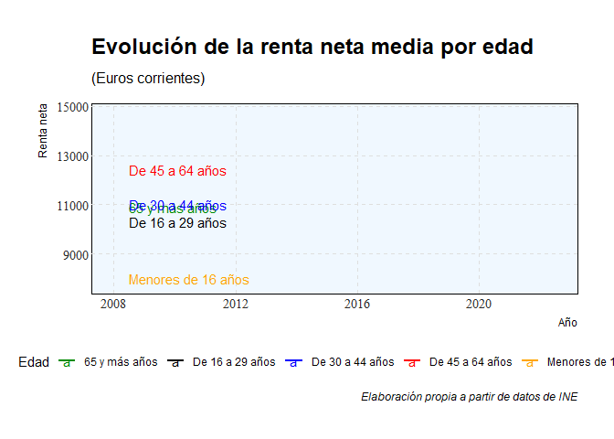
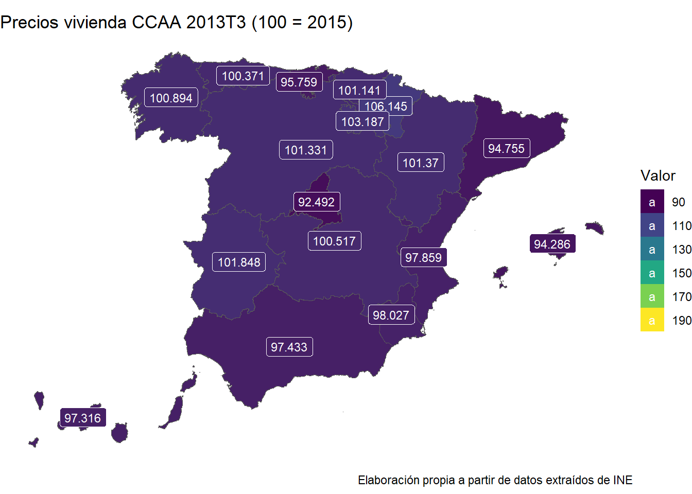

Vamos a analizar el mercado de la vivienda y comprarlo con su accesibilidad de los jóvenes
Trabajo BigData
Vivienda
Autores/as
Joel Seguí
Saúl Gil
Pedro Peñalver
Fecha de publicación
20 de diciembre de 2023
Introducción
El objetivo de este trabajo es analizar la situación en la que se encuentran los jóvenes a la hora de acceder al mercado laboral. Para ello analizaremos diferentes métricas entre las que se encuentran: Evolución de los niveles de precios de la vivienda a nivel nacional y autonómico, comparación de esta con la de los salarios reales…
De esta manera constataremos las dificultades a alas que se enfrentan los jóvenes españoles para emanciparse. También extraeremos conclusiones sobre si es así en todo el país o si por el contrario hay diferencias según el área geográfica.
Vamos a utilizar datos de los paquetes pxR(ine), eurostat además de proveedores de datos externos.
Código
#Paquetes Preliminareslibrary(pxR)library(tidyverse)library(data.table)library(rlist)library(fs)library(curl)library(rio)library(readxl)library(downloader)library(writexl)#-------------------Creamos una carpeta para guardar los datos------------------dir_create("./docs/datos")#Descargamos los datos y los exportamos sin pulir: #---------------------Índice de Precios de Vivienda-----------------------------url <-"https://www.ine.es/jaxiT3/files/t/es/px/25171.px?nocab=1"aa <-read.px(url)#Lo convertimos a CSV para simplificar y creamos un dataframewrite.csv(aa, file ="data.csv", sep =",")IPV <-read.csv("data.csv")rm(list =ls()[!ls() %in%c("IPV")])#Los guardamos sin arreglarwrite.csv(IPV, file ="./docs/datos/ipv.csv")#-------------------------Compra-venta de vivienda------------------------------ruta_xls <-"https://apps.fomento.gob.es/BoletinOnline2/sedal/34010110.XLS"download.file(ruta_xls, "datos.xls", mode ="wb")nombres_hojas <-c("2004,2005,2006,2007,2008", "2009,2010,2011,2012,2013", "2014,2015,2016,2017,2018", "2019,2020,2021,2022,2023")# Leer todas las hojas en una listafor (i inseq_along(nombres_hojas)) { hoja <- nombres_hojas[i] df <- readxl::read_excel("datos.xls", sheet = i) write.csv(df, file =paste0(hoja, ".csv"), row.names =FALSE)}#Juntamos las cuatro sheets en una y después arreglaremos el desastrecompraventa_2004 <-read.csv("2004,2005,2006,2007,2008.csv")compraventa_2009 <-read.csv("2009,2010,2011,2012,2013.csv")compraventa_2014 <-read.csv("2014,2015,2016,2017,2018.csv")compraventa_2019 <-read.csv("2019,2020,2021,2022,2023.csv")cv <-bind_cols(compraventa_2009,compraventa_2014)cv <-bind_cols(cv,compraventa_2019)compraventa_2004 <- compraventa_2004[1:nrow(cv), ]cv <-bind_cols(cv,compraventa_2004)cv <- cv %>%filter(row_number() %in%6:72)cv <- cv %>%filter(!row_number() %in%2)#Los guardamos sin arreglarwrite.csv(cv, file ="./docs/datos/cv.csv")rm(list =ls())#--------------------------Renta por edad y sexo--------------------------------url3 <-"https://www.ine.es/jaxiT3/files/t/es/px/9942.px?nocab=1"aa <-read.px(url3)#Lo convertimos a CSV para simplificar y creamos un dataframewrite.csv(aa, file ="data.csv", sep =",")renta_edad <-read.csv("data.csv")#Los guardamos sin arreglarwrite.csv(renta_edad, file ="./docs/datos/renta_edad.csv")rm(list =ls())#---------------------------Renta por nacionalidad------------------------------url4 <-"https://www.ine.es/jaxiT3/files/t/es/px/9945.px?nocab=1"aa <-read.px(url4)#Lo convertimos a CSV para simplificar y creamos un dataframewrite.csv(aa, file ="data.csv", sep =",")renta_nacionalidad <-read.csv("data.csv")#Los guardamos sin arreglarwrite.csv(renta_nacionalidad, file ="./docs/datos/renta_nacionalidad.csv")rm(list =ls())#---------------------Hogares por regimen de tenencia edad----------------------url4 <-"https://www.ine.es/jaxiT3/files/t/es/px/9994.px?nocab=1"aa <-read.px(url4)#Lo convertimos a CSV para simplificar y creamos un dataframewrite.csv(aa, file ="data.csv", sep =",")vivienda_edad <-read.csv("data.csv")#Los guardamos sin arreglarwrite.csv(vivienda_edad, file ="./docs/datos/vivienda_datos.csv")rm(list =ls())#Borramos archivos como las sheets separadas y otros datosfile.remove("2004,2005,2006,2007,2008.csv", "2009,2010,2011,2012,2013.csv","2014,2015,2016,2017,2018.csv", "2019,2020,2021,2022,2023.csv", "compraventa.csv", "data.csv", "datos.xls", "./docs/datos/25171.px","./docs/datos/34010110.XLS")#> [1] TRUE TRUE TRUE TRUE FALSE TRUE TRUE FALSE FALSE#----------------------Procedemos a limpiar los datos---------------------------#-------------Creamos una carpeta para guardar los datos pulidos----------------dir_create("./datos_pulidos")library(zoo)###AHORA LIMPIAMOS LOS DATOS PARA TRABAJAR MEJOR CON ELLOS####-------------------Indice de precios de la Vivienda----------------------------cv <-import(file ="./docs/datos/cv.csv")#Elimino las columnas duplicadas indicando el nombre de la provincia #para dejar solo una columna de provinciascv <- cv[-1,]colnames(cv) <-NULLcolumnas_duplicadas <-duplicated(t(cv))print(columnas_duplicadas)#> [1] FALSE FALSE FALSE FALSE FALSE FALSE FALSE FALSE FALSE FALSE FALSE FALSE#> [13] FALSE FALSE FALSE FALSE FALSE FALSE FALSE FALSE FALSE FALSE TRUE FALSE#> [25] FALSE FALSE FALSE FALSE FALSE FALSE FALSE FALSE FALSE FALSE FALSE FALSE#> [37] FALSE FALSE FALSE FALSE FALSE FALSE FALSE TRUE FALSE FALSE FALSE FALSE#> [49] FALSE FALSE FALSE FALSE FALSE FALSE FALSE FALSE FALSE FALSE FALSE FALSE#> [61] FALSE FALSE FALSE FALSE FALSE FALSE FALSE FALSE FALSE FALSE FALSE FALSE#> [73] FALSE FALSE FALSE FALSE FALSE FALSE FALSE FALSE FALSE FALSE FALSE FALSEcv <- cv[, !columnas_duplicadas]colnames(cv) <-paste0("col_", 1:ncol(cv))#Elimino otra columnaa duplicadaa que el argumento no encuenrtra cv <- cv[, -62]#Doy nombre a la posición [1,2] de provincias para después poder trabajar mejor#Ya que convertiremos la primera fila en colnamescv[1,2] <-"Provincia"colnames(cv)#> [1] "col_1" "col_2" "col_3" "col_4" "col_5" "col_6" "col_7" "col_8" #> [9] "col_9" "col_10" "col_11" "col_12" "col_13" "col_14" "col_15" "col_16"#> [17] "col_17" "col_18" "col_19" "col_20" "col_21" "col_22" "col_23" "col_24"#> [25] "col_25" "col_26" "col_27" "col_28" "col_29" "col_30" "col_31" "col_32"#> [33] "col_33" "col_34" "col_35" "col_36" "col_37" "col_38" "col_39" "col_40"#> [41] "col_41" "col_42" "col_43" "col_44" "col_45" "col_46" "col_47" "col_48"#> [49] "col_49" "col_50" "col_51" "col_52" "col_53" "col_54" "col_55" "col_56"#> [57] "col_57" "col_58" "col_59" "col_60" "col_61" "col_63" "col_64" "col_65"#> [65] "col_66" "col_67" "col_68" "col_69" "col_70" "col_71" "col_72" "col_73"#> [73] "col_74" "col_75" "col_76" "col_77" "col_78" "col_79" "col_80" "col_81"#> [81] "col_82"#Seleccionamos la primera fila del df y lo convertimos en un vector. Después, #Hacemos que los NA se sustituyan por el texto de su izquierda (Remplazamos NA`s#por el año al que corresponde esa columnas)df <- cv %>%slice(1) %>%unlist()df <-na.locf(df)#Ahora convertimos el vector en la fila 1 que después convrtiremos en colnames#para trabajar mejor.cv[1,] <- df #Juntamos la fila 1 y 2 a partir de la tercer columna separando el texto con "_" #y le rellenamos las dos columnas restantes con los nombres que nos vengan mejor #para trabajaraa <- cv[1,]aa <-c("","Provincia",paste(cv[1,3:ncol(cv)],cv[2,3:ncol(cv)], sep ="_"))#Convertimos el vector aa en colnamescolnames(cv) = aa#Quitamos la primera y la segunda fila, es información que ya indica colnamescv <- cv[-(1:2), -(1)]colnames(cv)#> [1] "Provincia" "Año 2009_1º" "Año 2009_2º" "Año 2009_3º" #> [5] "Año 2009_4º" "Año 2010_1º" "Año 2010_2º" "Año 2010_3º" #> [9] "Año 2010_4º" "Año 2011_1º" "Año 2011_2º" "Año 2011_3º" #> [13] "Año 2011_4º" "Año 2012_1º" "Año 2012_2º" "Año 2012_3º" #> [17] "Año 2012_4º" "Año 2013_1º" "Año 2013_2º" "Año 2013_3º" #> [21] "Año 2013_4º" "Año 2014_1º" "Año 2014_2º" "Año 2014_3º" #> [25] "Año 2014_4º" "Año 2015_1º" "Año 2015_2º" "Año 2015_3º" #> [29] "Año 2015_4º" "Año 2016_1º" "Año 2016_2º" "Año 2016_3º" #> [33] "Año 2016_4º" "Año 2017_1º" "Año 2017_2º" "Año 2017_3º" #> [37] "Año 2017_4º" "Año 2018_1º" "Año 2018_2º" "Año 2018_3º" #> [41] "Año 2018_4º" "Año 2019_1º" "Año 2019_2º" "Año 2019_3º" #> [45] "Año 2019_4º" "Año 2020_1º" "Año 2020_2º" "Año 2020_3º" #> [49] "Año 2020_4º" "Año 2021_1º" "Año 2021_2º" "Año 2021_3º" #> [53] "Año 2021_4º" "Año 2022_1º" "Año 2022_2º" "Año 2022_3º" #> [57] "Año 2022_4º" "Año 2023_1º" "Año 2023_2º" "Año 2023_3º (**)"#> [61] "Año 2004_1º" "Año 2004_2º" "Año 2004_3º" "Año 2004_4º" #> [65] "Año 2005_1º" "Año 2005_2º" "Año 2005_3º" "Año 2005_4º" #> [69] "Año 2006_1º" "Año 2006_2º" "Año 2006_3º" "Año 2006_4º" #> [73] "Año 2007_1º" "Año 2007_2º" "Año 2007_3º" "Año 2007_4º" #> [77] "Año 2008_1º" "Año 2008_2º" "Año 2008_3º" "Año 2008_4º"#Hacemos que todas las columnas que indican año_trimestre pivoten y dejen los#valores que contenían las transacciones por un lado y el año_trimestre por otroTransacciones_por_provincia <- cv %>%pivot_longer(cols =starts_with("Año"), names_to ="Año_Trimestre", names_prefix ="Año", values_to ="Transacciones",values_drop_na =TRUE)#Guardamos en la carpeta(en formato .csv) de datos pulidos y seguimoswrite.csv(Transacciones_por_provincia, file ="datos_pulidos/Transacciones_por_povincia.csv")#----------------Índice de precios de la vivienda-------------------------------ipv <-import(file ="./docs/datos/ipv.csv")#Estos datos están bien, quitamos las dos columnas que no aportan y los guardamosipv <- ipv[,-(1:2)]write.csv(ipv, file ="./datos_pulidos/indice_precio_vivienda.csv")#rm(list = ls())#----------------Renta por edad-------------------------------------------------re <-import(file ="./docs/datos/renta_edad.csv")#Renombramos las columnas, seleccionamos lo que nos interesa y borramos el restante#Exportamosre <- re %>%rename(renta ="value") %>%select(!c("V1", "X"))write.csv(re, file ="./datos_pulidos/renta_por_edad.csv")#----------------Régimen tenencia de vivienda por edad--------------------------vd <-import(file ="./docs/datos/vivienda_datos.csv")#Renombramos las columnas, seleccionamos lo que nos interesa y borramos el restante#Exportamosvd<- vd %>%rename(Porcentaje ="value") %>%select(!c("V1", "X"))write.csv(vd, file ="./datos_pulidos/tenencia_de_vivienda.csv")rm(list =ls())#--------------------IMPORTAR DATOS CE / EUROSTAT-------------------------------options(scipen =999) #- para quitar la notación científicalibrary(eurostat) library(DT) library(tidyverse)info <-search_eurostat("GDP", type ="all")my_table <-"sdg_08_10"#Comprobamos que es el PIB pclabel_eurostat_tables(my_table)#> [1] "Real GDP per capita"df_original <-get_eurostat(my_table, time_format ='raw', keepFlags =TRUE)df_names <-names(df_original)df_original <-label_eurostat(df_original, code = df_names, fix_duplicated =TRUE)#Creamos otro df para trabajor con él df <- df_original#Ver que hay en el dfdf_aa <- pjpv.curso.R.2022::pjp_dicc(df)df_bb <- pjpv.curso.R.2022::pjp_valores_unicos(df, nn =400)#Vamos a hacer un poco de limpiezaobj_buenos <-c("df", "df_original", "df_bb")rm(list =setdiff(ls(), obj_buenos))#Vamos a seguir arreglando el dfdf <- df |>rename(year = time_code) |>rename(PIB_pc = values) |>rename(country = geo)#Chain linked volumes (2010), euro per capita#Solo queremos el PIB_pcdf <- df |>filter(unit =="Chain linked volumes (2010), euro per capita")#Eliminamos todo lo que nos molesta a la vista df <- df |>select(-c(unit_code, values_code, unit, time, na_item_code, na_item, flags))df <- df |>mutate(year =as.numeric(year))df <- df |>mutate(iso_2_code = eurostat::harmonize_country_code(geo_code))df <- df |>select(-c(geo_code, flags_code))library(fs)dir_create("datos_pulidos")#A continuación vamos a exportar los datos para luego importarlas más fácilmente #library(rio)export(df, "./datos_pulidos/PIB_pc.csv", type ="csv")#---------------DATOS SOBRE EL SALARIO POR NIVEL DE FORMACIÓN-------------------library(rio)library(tidyverse)url <-"https://www.ine.es/jaxiT3/files/t/es/csv_bdsc/13931.csv?nocab=1"df_ine <-import(url)df_ine_01 <- df_ine |>filter(Decil %in% ("Total decil")) |>select("Periodo", "Tipo de jornada", "NIVELES DE FORMACION", "Total") |>rename(year = Periodo) |>rename(jornada ='Tipo de jornada') |>rename(formacion ='NIVELES DE FORMACION') |>rename(salario = Total)#VAMOS A CONVERTIR LA VARIABLE salario A NUMERIC#R y el INE me han jodiedo la vida para pasar esto a numeric (antes no funcionaba)df_ine_01 <- df_ine_01 |>mutate(salario =as.numeric(gsub(",", ".", gsub("\\.", "", salario))))export(df_ine_01,"./datos_pulidos/salario_formacion.csv", type ="csv")#salarios por edadesurl_1 <-"https://www.ine.es/jaxiT3/files/t/es/csv_bdsc/13928.csv?nocab=1"df_ine_x1 <-import(url_1)df_ine_02 <- df_ine_x1 |>filter(Decil %in% ("Total decil")) |>select("Periodo", "Tipo de jornada", "Grupo de edad", "Total") |>rename(year = Periodo) |>rename(jornada ='Tipo de jornada') |>rename(grupo_edad ='Grupo de edad') |>rename(salario = Total)#PASAMOS A NUMERICdf_ine_02 <- df_ine_02 |>mutate(salario =as.numeric(gsub(",", ".", gsub("\\.", "", salario))))export(df_ine_02,"./datos_pulidos/salario_grupo_edad.csv", type ="csv")#Datos sobre el IPCurl_2 <-"https://www.ine.es/jaxiT3/files/t/es/csv_bdsc/50908.csv?nocab=1"df_ipc <-import(url_2)df_ipc_01 <- df_ipc |>filter(`Grupos ECOICOP`%in%c("Índice general", "04 Vivienda, agua, electricidad, gas y otros combustibles")) |>select("Periodo", "Grupos ECOICOP", "Tipo de dato", "Total") |>rename(year = Periodo) |>rename(grupo ='Grupos ECOICOP') |>rename(tipo_dato =`Tipo de dato` ) #PASAMOS A NUMERICdf_ipc_01 <- df_ipc_01 |>mutate(Total =as.numeric(gsub(",", ".", gsub("\\.", "", Total))))#PARA SEPARAR EN LA VARIABLE YEAR LOS DATOS POR AÑOS Y MESES#df_sep <- df_ipc_01 |> # separate(col = year, into = c("year", "month"), sep = "M")#df_sep <- df_sep |> # mutate(month = paste0("M", month))export(df_ipc_01, "./datos_pulidos/IPC_mas_vivienda.csv", type ="csv")#Por tipo de jornadadf_temporal <-import("https://www.ine.es/jaxiT3/files/t/es/csv_bdsc/10894.csv?nocab=1")df_contrato <-import("https://www.ine.es/jaxiT3/files/t/es/csv_bdsc/4854.csv?nocab=1")df_contrato <- df_contrato %>%filter(Sexo %in%"Ambos sexos")write.csv(df_temporal, file="./datos_pulidos/temporalidad_edad.csv")write.csv(df_contrato, file ="./datos_pulidos/contrato_edad.csv")#-------------------------Paro-----------------------------------df_activos <-import("https://www.ine.es/jaxiT3/files/t/es/csv_bdsc/4049.csv?nocab=1")df_parados <-import("https://www.ine.es/jaxiT3/files/t/es/csv_bdsc/4084.csv?nocab=1")df_activos <- df_activos %>%filter(Sexo %in%"Ambos sexos") %>%filter(Unidad %in%"Valor absoluto")df_parados <- df_parados %>%filter(Sexo %in%"Ambos sexos") %>%filter(Unidad %in%"Valor absoluto")#Saúl#-------------------------Por tipo de jornada-----------------------------------df_temporal <-import("https://www.ine.es/jaxiT3/files/t/es/csv_bdsc/10894.csv?nocab=1")df_contrato <-import("https://www.ine.es/jaxiT3/files/t/es/csv_bdsc/4854.csv?nocab=1")df_contrato <- df_contrato %>%filter(Sexo %in%"Ambos sexos")write.csv(df_temporal, file="./datos_pulidos/temporalidad_edad.csv")write.csv(df_contrato, file ="./datos_pulidos/contrato_edad.csv")#Saúl#-------------------------Paro-----------------------------------df_activos <-import("https://www.ine.es/jaxiT3/files/t/es/csv_bdsc/4049.csv?nocab=1")df_parados <-import("https://www.ine.es/jaxiT3/files/t/es/csv_bdsc/4084.csv?nocab=1")df_activos <- df_activos %>%filter(Sexo %in%"Ambos sexos") %>%filter(Unidad %in%"Valor absoluto")df_parados <- df_parados %>%filter(Sexo %in%"Ambos sexos") %>%filter(Unidad %in%"Valor absoluto")export(df_activos, file ="./datos_pulidos/activos.csv", format="csv")export(df_parados, file ="./datos_pulidos/parados.csv", format="csv")
Evolución de la renta neta por edad
Iniciaremos analizando los datos de renta según la edad (como pueden imaginar, los jóvenes constituyen el grupo poblacional que dispone de menos renta), para, a continuación, adentrarnos en datos que muestran la evolución de los precios de la vivienda.
#Cargamos datoslibrary(rio)library(tidyverse)library(gganimate)library(ggthemes)library(hrbrthemes)#-renta_edad <-read.csv("./datos_pulidos/renta_por_edad.csv")dff <- renta_edad %>%rename(tipo = Renta.anual.neta.media.por.persona.y.por.unidad.de.consumo) %>%filter(tipo =="Renta neta media por persona", Sexo =="Ambos sexos", !(Edad %in%c("De 18 a 64 años", "Menos de 18 años", "Total")))p <-ggplot(dff, aes(x = Periodo, y = renta, color = Edad)) +geom_line(size =1) +labs(title ="Evolución de la renta neta media por edad", subtitle ="(Euros corrientes)",x ="Año", y ="Renta neta", caption ="Elaboración propia a partir de datos de INE") +theme_ipsum() +theme(legend.position ="bottom",panel.grid.major =element_line(colour ="gray87", linetype ="dashed"),panel.background =element_rect(fill ="aliceblue"),panel.grid.minor =element_blank(),axis.text =element_text(family ="serif", size =9, colour ="gray17")) +scale_color_manual(values =c("green4", "black", "blue", "red", "orange")) +geom_text(aes(label = Edad), nudge_x =0.5, nudge_y =0.5, hjust =0)p_animated <- p +transition_reveal(Periodo) +enter_fade() +exit_fade()animate(p_animated, nframes =200, fps =20)

Código
library(rio)library(tidyverse)library(gganimate)library(ggthemes)library(hrbrthemes)renta_edad <-read.csv("./datos_pulidos/renta_por_edad.csv")dff <- renta_edad %>%rename(tipo = Renta.anual.neta.media.por.persona.y.por.unidad.de.consumo) %>%filter(tipo =="Renta neta media por persona", Sexo =="Ambos sexos", !(Edad %in%c("De 18 a 64 años", "Menos de 18 años", "Total")))p6 <-ggplot(data=dff) +geom_line(aes(x = Periodo, y = renta, color = Edad, group = Edad)) +labs (title ="Evolución de la renta neta media por edad", subtitle ="(En euros corrientes)", y ="Renta", x ="Año") +theme_ipsum()plotly::ggplotly(p6)
Tenemos este primer gráfico dinámico, que básicamente lo hemos hecho para demostrar que lo podemos hacer. Sabemos que no es especialmente útil, pero sí vistoso, por eso hemos hecho esta presión interactiva pero estática del mismo gráfico, para un mejor análisis acceded al fijo interactivo.
En este gráfico, cuyos datos están extraídos del INE podemos observar, como ya anticipábamos, que los jóvenes (16-29 años de edad) son el rango de edad que dispone de menos renta. Más notorio es, claro está, con los menores de 16 años. Los jóvenes de 16 a 29 años contaban con una renta media neta o disponible (después de impuestos) de 11.660€.
La diferencia con el grupo de 30 a 44 años ha pasado de un 6’38% en 2008 a 10’13% en 2022. Un incremento de un 58’78%.
Con el grupo de 45 a 64 años del 16’86% mencionado arriba a un 18’03%. Un incremento de un 6’94%.
La mayor divergencia se da con el grupo de los mayores de 65 años. De una diferencia del 6’03% en 2008 a una del 21% en 2022. Un espectacular incremento del 248’23%.
Por tanto, la renta de lo jóvenes de entre 16 y 29 años es la que menos ha crecido: tan solo un 12’97% en 14 años.
Como podemos observar, no sólo es que los jóvenes tengan una renta disponible menor, si no que cada vez se queda más atrás respecto al resto. Los jóvenes, en términos de renta, son cada vez relativamente más pobres.
Porcentaje de parados según la edad
Código
#Paqueteslibrary(reshape2)library(tidyverse)library(car) # regression analysislibrary(plotly)library(ggplot2)library(gganimate)library(xts)library(dygraphs)library(gifski)library(ggthemes)#rm(list = ls())#Df`s#---------------------Tipo de contrato------------------------------------------df_contrato <-read.csv("./datos_pulidos/contrato_edad.csv")#----------------------Arreglamos-----------------------------------------------head(df_contrato)#> X Sexo Edad Tipo.de.jornada Tipo.de.dato Periodo Total#> 1 1 Ambos sexos Total Total Valor absoluto 2022 20.390,6#> 2 2 Ambos sexos Total Total Valor absoluto 2021 19.773,6#> 3 3 Ambos sexos Total Total Valor absoluto 2020 19.202,4#> 4 4 Ambos sexos Total Total Valor absoluto 2019 19.779,3#> 5 5 Ambos sexos Total Total Valor absoluto 2018 19.327,7#> 6 6 Ambos sexos Total Total Valor absoluto 2017 18.824,8df_contrato <- df_contrato %>%mutate(Total =gsub("\\.", "", Total))df_contrato <- df_contrato %>%mutate(Total =as.numeric(gsub(",", ".", Total)))head(df_contrato)#> X Sexo Edad Tipo.de.jornada Tipo.de.dato Periodo Total#> 1 1 Ambos sexos Total Total Valor absoluto 2022 20390.6#> 2 2 Ambos sexos Total Total Valor absoluto 2021 19773.6#> 3 3 Ambos sexos Total Total Valor absoluto 2020 19202.4#> 4 4 Ambos sexos Total Total Valor absoluto 2019 19779.3#> 5 5 Ambos sexos Total Total Valor absoluto 2018 19327.7#> 6 6 Ambos sexos Total Total Valor absoluto 2017 18824.8df_contrato <- df_contrato %>%filter(Tipo.de.jornada %in%c("Jornada a tiempo completo", "Jornada a tiempo parcial")) %>%filter(Tipo.de.dato %in%"Porcentaje")df_contrato_pivot <- df_contrato %>%pivot_wider(names_from ="Tipo.de.jornada", values_from ="Total")df_contrato_pivot <- df_contrato_pivot[,-(1:2)]de16a34 <- df_contrato_pivot %>%filter(Edad %in%c("De 25 a 29 años", "De 16 a 19 años", "De 20 a 24 años", "De 30 a 34años"))columna <-rep("De 16 a 34 años", times =17)de16a34 <- de16a34 %>%mutate_all(~replace(., is.na(.), 0))##de16a34 <- de16a34 %>%group_by(Periodo) %>%summarise(tiempo_completo =sum(`Jornada a tiempo completo`)/4,tiempo_parcial =sum(`Jornada a tiempo parcial`)/4) %>%mutate(Edad = columna)mas35 <- df_contrato_pivot %>%filter(Edad %in%c("70 y más años", "De 35 a 39 años", "De 40 a 44 años", "De 45 a 49años", "De 50 a 54 años", "De 55 a 59 años", "De 60 a 64 años", "De 65 a 69 años"))columna <-rep("Mayores de 35", times =17)mas35 <- mas35 %>%mutate_all(~replace(., is.na(.), 0))mas35 <- mas35 %>%group_by(Periodo) %>%summarise(tiempo_completo =sum(`Jornada a tiempo completo`)/8,tiempo_parcial =sum(`Jornada a tiempo parcial`)/8) %>%mutate(Edad = columna)contrato <-rbind(mas35, de16a34)rm(list =ls()[!ls() %in%c("salario","contrato")])##-------------------------Póblación Activa----------------------------------------------df_activos <-read.csv("./datos_pulidos/activos.csv")##-------------------------Arreglamos-----------------------------------------------------head(df_activos)#> Edad Sexo Unidad Periodo Total#> 1 Total Ambos sexos Valor absoluto 2023T3 24.121,0#> 2 Total Ambos sexos Valor absoluto 2023T2 23.819,2#> 3 Total Ambos sexos Valor absoluto 2023T1 23.580,5#> 4 Total Ambos sexos Valor absoluto 2022T4 23.487,8#> 5 Total Ambos sexos Valor absoluto 2022T3 23.525,9#> 6 Total Ambos sexos Valor absoluto 2022T2 23.387,4df_activos <- df_activos %>%mutate(Total =gsub("\\.", "", Total))df_activos <- df_activos %>%mutate(Total =as.numeric(gsub(",", ".", Total)))head(df_activos)#> Edad Sexo Unidad Periodo Total#> 1 Total Ambos sexos Valor absoluto 2023T3 24121.0#> 2 Total Ambos sexos Valor absoluto 2023T2 23819.2#> 3 Total Ambos sexos Valor absoluto 2023T1 23580.5#> 4 Total Ambos sexos Valor absoluto 2022T4 23487.8#> 5 Total Ambos sexos Valor absoluto 2022T3 23525.9#> 6 Total Ambos sexos Valor absoluto 2022T2 23387.4menos35 <- df_activos %>%filter(Edad %in%c("De 25 a 29 años", "De 16 a 19 años", "De 20 a 24 años", "De 30 a 34años"))head(menos35)#> Edad Sexo Unidad Periodo Total#> 1 De 16 a 19 años Ambos sexos Valor absoluto 2023T3 353.4#> 2 De 16 a 19 años Ambos sexos Valor absoluto 2023T2 284.3#> 3 De 16 a 19 años Ambos sexos Valor absoluto 2023T1 258.7#> 4 De 16 a 19 años Ambos sexos Valor absoluto 2022T4 268.2#> 5 De 16 a 19 años Ambos sexos Valor absoluto 2022T3 333.2#> 6 De 16 a 19 años Ambos sexos Valor absoluto 2022T2 295.7menos35 <- menos35 %>%mutate(Año =substr(Periodo, 1, 4)) %>%group_by(Edad, Sexo, Unidad, Año) %>%summarise(Total =sum(Total)/4)menos35 <- menos35[,-(2:3)]columna <-rep("De 16 a 34 años", times =22)menos35 <- menos35 %>%group_by(Año) %>%summarise(total =sum(Total)) %>%mutate(grupo_edad = columna) %>%filter(!Año %in%c("2023")) %>%rename(num_activos ="total")mas35 <- df_activos %>%filter(Edad %in%c("70 y más años", "De 35 a 39 años", "De 40 a 44 años", "De 45 a 49años", "De 50 a 54 años", "De 55 a 59 años", "De 60 a 64 años", "De 65 a 69 años"))mas35 <- mas35 %>%mutate(Año =substr(Periodo, 1, 4)) %>%group_by(Edad, Sexo, Unidad, Año) %>%summarise(Total =sum(Total)/4)mas35 <- mas35[,-(2:3)]columna <-rep("Mayores de 35", times =22)mas35 <- mas35 %>%group_by(Año) %>%summarise(total =sum(Total)) %>%mutate(grupo_edad = columna) %>%filter(!Año %in%c("2023")) %>%rename(num_activos ="total")activos <-rbind(mas35, menos35)rm(list =ls()[!ls() %in%c("salario","contrato", "activos")])##-----------------------------Póblación parada---------------------------------df_parados <-read.csv("./datos_pulidos/parados.csv")##-----------------------------Arreglamos y sacamos la población ocupada--------head(df_parados)#> Edad Sexo Unidad Periodo Total#> 1 Total Ambos sexos Valor absoluto 2023T3 2.855,2#> 2 Total Ambos sexos Valor absoluto 2023T2 2.762,5#> 3 Total Ambos sexos Valor absoluto 2023T1 3.127,8#> 4 Total Ambos sexos Valor absoluto 2022T4 3.024,0#> 5 Total Ambos sexos Valor absoluto 2022T3 2.980,2#> 6 Total Ambos sexos Valor absoluto 2022T2 2.919,4df_parados <- df_parados %>%mutate(Total =gsub("\\.", "", Total))df_parados <- df_parados %>%mutate(Total =as.numeric(gsub(",", ".", Total)))head(df_parados)#> Edad Sexo Unidad Periodo Total#> 1 Total Ambos sexos Valor absoluto 2023T3 2855.2#> 2 Total Ambos sexos Valor absoluto 2023T2 2762.5#> 3 Total Ambos sexos Valor absoluto 2023T1 3127.8#> 4 Total Ambos sexos Valor absoluto 2022T4 3024.0#> 5 Total Ambos sexos Valor absoluto 2022T3 2980.2#> 6 Total Ambos sexos Valor absoluto 2022T2 2919.4menos35 <- df_parados %>%filter(Edad %in%c("De 25 a 29 años", "De 16 a 19 años", "De 20 a 24 años", "De 30 a 34años"))head(menos35)#> Edad Sexo Unidad Periodo Total#> 1 De 16 a 19 años Ambos sexos Valor absoluto 2023T3 142.0#> 2 De 16 a 19 años Ambos sexos Valor absoluto 2023T2 122.1#> 3 De 16 a 19 años Ambos sexos Valor absoluto 2023T1 121.4#> 4 De 16 a 19 años Ambos sexos Valor absoluto 2022T4 114.8#> 5 De 16 a 19 años Ambos sexos Valor absoluto 2022T3 151.4#> 6 De 16 a 19 años Ambos sexos Valor absoluto 2022T2 144.0menos35 <- menos35 %>%mutate(Año =substr(Periodo, 1, 4)) %>%group_by(Edad, Sexo, Unidad, Año) %>%summarise(Total =sum(Total)/4)menos35 <- menos35[,-(2:3)]columna <-rep("De 16 a 34 años", times =22)menos35 <- menos35 %>%group_by(Año) %>%summarise(total =sum(Total)) %>%mutate(grupo_edad = columna) %>%filter(!Año %in%c("2023")) %>%rename(num_parados ="total")mas35 <- df_parados %>%filter(Edad %in%c("70 y más años", "De 35 a 39 años", "De 40 a 44 años", "De 45 a 49años", "De 50 a 54 años", "De 55 a 59 años", "De 60 a 64 años", "De 65 a 69 años"))mas35 <- mas35 %>%mutate(Año =substr(Periodo, 1, 4)) %>%group_by(Edad, Sexo, Unidad, Año) %>%summarise(Total =sum(Total)/4) %>%mutate_all(~replace(., is.na(.), 0))mas35 <- mas35[,-(2:3)]columna <-rep("Mayores de 35", times =22)mas35 <- mas35 %>%group_by(Año) %>%summarise(total =sum(Total)) %>%mutate(grupo_edad = columna) %>%filter(!Año %in%c("2023")) %>%rename(num_parados ="total")parados <-rbind(mas35, menos35)rm(list =ls()[!ls() %in%c("salario","contrato", "activos", "parados")])act_parad <-merge(parados, activos, by =c("Año", "grupo_edad"))act_parad <- act_parad %>%mutate(num_ocupados = num_activos - num_parados)rm(list =ls()[!ls() %in%c("salario","contrato", "act_parad")])##------------------------------Gráficos----------------------------------------head(act_parad)#> Año grupo_edad num_parados num_activos num_ocupados#> 1 2002 De 16 a 34 años 973.125 5449.350 4476.225#> 2 2002 Mayores de 35 727.850 8622.975 7895.125#> 3 2003 De 16 a 34 años 999.050 5571.700 4572.650#> 4 2003 Mayores de 35 764.300 9043.125 8278.825#> 5 2004 De 16 a 34 años 942.150 5596.725 4654.575#> 6 2004 Mayores de 35 791.800 9414.925 8623.125porcentaje_parados <- act_parad %>%group_by(Año) %>%group_by(Año, grupo_edad) %>%mutate(Ocupados_edad = (num_ocupados / num_activos) *100,Parados_edad = (num_parados / num_activos) *100) %>%rename(Periodo = Año)rm(list =ls()[!ls() %in%c("salario","contrato", "porcentaje_parados", "vivienda","act_parad")])contrato <- contrato %>%rename(jornada_completa = tiempo_completo,jornada_parcial = tiempo_parcial,grupo_edad = Edad)P2 <-ggplot(porcentaje_parados, aes(x = Periodo, y = Parados_edad, group = grupo_edad,color = grupo_edad)) +geom_line() +scale_color_manual(values =c("blue", "red")) +geom_point( color="black", size=2) +theme_economist() +labs(title ="Porcentaje de parados según la edad", x ="Periodo", y ="Porcentaje", caption ="Elaboración propia a partir de datos de INE")plotly::ggplotly(P2)
En este otro gráfico podemos observar además cómo la tasa de desempleo es muy superior en el caso de los menores de 35 años respecto a los mayores de 35 años, es decir, durante este primer tramo de edad, de 16 a 34 años, sufrirán un menor poder adquisitivo respecto a los mayores de 34 años.
Porcentaje de contratos de Jornada completa por edad
Código
p3 <-ggplot(contrato, aes(x = Periodo, y = jornada_completa, fill = grupo_edad)) +geom_col(position ="dodge") +scale_fill_manual(values =c("blue3", "red3"), name =NULL) +theme_economist() +labs(title ="Contratos de jornada completa según la edad", x ="Periodo", y ="Porcentaje", caption ="Elaboración propia a partir de datos de INE") plotly::ggplotly(p3)
Además, en este gráfico de barras, podemos apreciar como los contratos a jornada completa han disminuido prácticamente 10 puntos porcentuales desde la Gran Recesión hasta nuestros días, mientras que los de los mayores de 35 años han permanecido estables.
El hecho de que los contratos no sean a jornada completa, influye de forma decisiva en que la renta final sea menor, ya que a menos horas trabajadas, menos horas cobradas.
Índice del nivel de Precios de la vivienda a nivel nacional
Ahora vamos a analizar cómo se han comportado los precios de la vivienda en general. Primero lo vamos a hacer observando el comportamiento de los precios de forma general a nivel nacional. Luego veremos cómo se ha comportado en términos de tasas de variación, y más tarde, el nivel de precios por comunidades autónomas y en diferentes momentos del tiempo.
Código
#Paquetes preliminares#install.packages("mapSpain")library(mapSpain)#install.packages("pxR")library(pxR)#install.packages("tidyverse")library(tidyverse)library(data.table)library(rlist)library(fs)library(curl)library(rio)library(sf)library(readxl)library(downloader)library(writexl)#install.packages("rlist")# install.packages("devtools")#devtools::install_github("r-lib/conflicted")#Creamos una carpeta para guardar los datos#Descargamos los datos en formato PX desde el Ine#Índice de Precios de Vivienda por CCAA: general, vivienda nueva y de segunda mano#Como la URL es: "https://www.ine.es/jaxiT3/files/t/es/px/25171.px?nocab=1"url <-"https://www.ine.es/jaxiT3/files/t/es/px/25171.px?nocab=1"aa <-read.px(url)#Lo convertimos a CSV para simplificar y creamos un dataframewrite.csv(aa, file ="./datos_pulidos/data.csv", sep =",")#Lo convertimos a CSV para simplificar y creamos un dataframewrite.csv(aa, file ="./datos_pulidos/data.csv")df <-read.csv("./datos_pulidos/data.csv")#Ahora nos ponemos a curra un poquito:library(ggthemes)#install.packages("plotly")library(plotly)#install.packages("ggExtra")library(ggExtra)library(patchwork)#Os voy a matar con este código y esta sintaxis que me hacéis arreglar cada vezdf1 <- df %>% dplyr::rename(ámbito = Comunidades.y.Ciudades.Autónomas, tipo = General..vivienda.nueva.y.de.segunda.mano, Valor = value) %>%filter (tipo =="General", Índices.y.tasas =="Índice", ámbito =="Nacional")#rm (list = ls())df1.1<- df %>%rename(Territorio = Comunidades.y.Ciudades.Autónomas, tipo = General..vivienda.nueva.y.de.segunda.mano, Valor = value)df1.2<- df1.1%>%mutate(Territorio =case_when( Territorio =="01 Andalucía"~"Andalucía", Territorio =="02 Aragón"~"Aragón", Territorio =="03 Asturias, Principado de"~"Asturias, Principado de", Territorio =="04 Balears, Illes"~"Balears, Illes", Territorio =="05 Canarias"~"Canarias", Territorio =="06 Cantabria"~"Cantabria", Territorio =="07 Castilla y León"~"Castilla y León", Territorio =="08 Castilla - La Mancha"~"Castilla-La Mancha", Territorio =="09 Cataluña"~"Cataluña", Territorio =="10 Comunitat Valenciana"~"Comunitat Valenciana", Territorio =="11 Extremadura"~"Extremadura", Territorio =="12 Galicia"~"Galicia", Territorio =="13 Madrid, Comunidad de"~"Madrid, Comunidad de", Territorio =="14 Murcia, Región de"~"Murcia, Región de", Territorio =="15 Navarra, Comunidad Foral de"~"Navarra, Comunidad Foral de", Territorio =="16 País Vasco"~"País Vasco", Territorio =="17 Rioja, La"~"Rioja, La", TRUE~ Territorio))df3 <- df1.2%>%filter (tipo =="General", Índices.y.tasas =="Índice", !(Territorio %in%c("Nacional", "18 Ceuta", "19 Melilla")))prov <- pjpv.curso.R.2022::LAU2_prov_2020_canariasccaa <- prov %>%group_by(ine_ccaa, ine_ccaa.n, ine_ccaa.n.pjp) %>%summarise() %>%ungroup()ccaa <- ccaa %>%rename(Territorio = ine_ccaa.n)df4 <- df3 %>%filter(Periodo =="2023T3")df5 <-full_join(ccaa, df4, by ="Territorio") %>%filter( !(Territorio %in%c("Ceuta", "Melilla")))df6 <- df3 %>%filter(Periodo =="2018T3")df7 <-full_join(ccaa, df6, by ="Territorio") %>%filter( !(Territorio %in%c("Ceuta", "Melilla")))df8 <- df3 %>%filter(Periodo =="2015T3")df9 <-full_join(ccaa, df8, by ="Territorio") %>%filter( !(Territorio %in%c("Ceuta", "Melilla")))df10 <- df3 %>%filter(Periodo =="2011T3")df11 <-full_join(ccaa, df10, by ="Territorio") %>%filter( !(Territorio %in%c("Ceuta", "Melilla")))df12 <- df3 %>%filter(Periodo =="2013T3")df13 <-full_join(ccaa, df12, by ="Territorio") %>%filter( !(Territorio %in%c("Ceuta", "Melilla")))df14 <- df3 %>%filter(Periodo =="2007T3")df15 <-full_join(ccaa, df14, by ="Territorio") %>%filter( !(Territorio %in%c("Ceuta", "Melilla")))library(patchwork)escala_limites <-c(90, 190)p4 <-ggplot(df5, aes(fill = Valor)) +geom_sf() +geom_sf_label(aes(label =as.character(Valor)), size =3, color ="black") +scale_fill_viridis_c(guide ="legend",limits = escala_limites) +labs(title ="Precios vivienda CCAA 2023T3 (100 = 2015)",caption ="Elaboración propia a partir de datos extraídos de INE") +theme_void() p7 <-ggplot(df13, aes(fill = Valor)) +geom_sf() +geom_sf_label(aes(label =as.character(Valor)), size =3, color ="white") +scale_fill_viridis_c(guide ="legend",limits = escala_limites) +labs(title ="Precios vivienda CCAA 2013T3 (100 = 2015)",caption ="Elaboración propia a partir de datos extraídos de INE") +theme_void() p9 <-ggplot(df15, aes(fill = Valor)) +geom_sf() +geom_sf_label(aes(label =as.character(Valor)), size =3, color ="black") +scale_fill_viridis_c(guide ="legend",limits = escala_limites) +labs(title ="Precios vivienda CCAA 20071T3 (100 = 2015)",caption ="Elaboración propia a partir de datos extraídos de INE") +theme_void() # Combinar los dos gráficosp9p7p4

Estos mapas de coropletas reflejan los niveles de precios de la vivienda en 6 momentos diferentes del tiempo. El primero es del tercer trimestre del año 2007. En ese momento los precios, como podemos observar, son los más altos. Este es el punto más elevado de la burbuja. Los años siguientes reflejan el pinchazo de la burbuja, con un descenso continuado de los precios hasta 2013. Que es el punto más bajo. Hemos decidido poner el año 2015 por ser el año de la base 100. A partir de ahí, vemos cómo en los años posteriores los precios son ya más elevados que en 2015, y particularmente en 2023, ligeramente por debajo, pero sin haber una burbuja. O, al menos, no parece haberla.
Al ser mapas de coropletas podemos sacar conclusiones acerca de en qué comunidades han aumentado más los precios y por tanto, dónde es más difícil acceder a la vivienda, ceteris paribus. En el último gráfico destacan claramente la Comunidad de Madrid, Cataluña y Baleares. Esto no nos sorprende, tanto la Comunidad de Madrid, como Cataluña son regiones muy dinámicas donde, además, se encuentran las principales ciudades de España. Baleares, por su parte, es una de las regiones más turísticas, donde la oferta de inmuebles tampoco es demasiado elevada. Destacan también en segunda fila País Vasco (región muy dinámica), Andalucía y Canarias (regiones muy turísticas).
Tal vez os habéis fijado en que estos mapas no concuerdan exactamente con lo que hemos visto hace dos gráficos (se veía que el nivel general de precios de la vivienda es ahora igual al del punto más alto de la burbuja y, sin embargo, en los mapas parece que en 2007T3 los precios son mucho más elevados que en la actualidad).
Esto se debe a que hay más viviendas allá donde más está subiendo el precio como se observa en el gráfico (que hay que insertar). La explicación de la afirmación anterior que parece a priori contradictoria, es que aunque hay más vivienda en esta zona (oferta elevada), la demanda es todavía más elevada que la oferta.
Régimen de viviendas de 16 a 29 años
Código
#Hogares por regimen de tenencia edad#Cargamos liberíaslibrary(ggplot2)library(hrbrthemes)library(tidyverse)library(pxR)url4 <-"https://www.ine.es/jaxiT3/files/t/es/px/9994.px?nocab=1"ac <-read.px(url4)write.csv(ac, file ="./datos_pulidos/data_1.csv", sep =",")vivienda_edad <-read.csv("./datos_pulidos/data_1.csv")dd <- vivienda_edad %>% dplyr::rename(regimen = Régimen.de.tenencia.de.la.vivienda.principal, edad = Edad.de.la.persona.de.referencia, sexo = Sexo.de.la.persona.de.referencia) %>%filter(edad =="De 16 a 29 años", sexo =="Ambos sexos")p30 <- dd %>%ggplot(aes(x = Periodo, y = value, fill = regimen)) +geom_bar(stat ="identity", position ="stack") +theme_ipsum() +labs(x ="Año", y ="% según régimen de tenencia", title ="Régimen de vivienda de 16 a 29 años",subtitle ="Datos porcentuales",caption ="Elaboración propia a partir de datos del INE") +scale_fill_manual(values =c("#66c2a5", "#fc8d62", "#8da0cb", "#e78ac3"), labels =c("Alquiler a precios de mercado", "Alquiler inferior al precio de mercado", "Cesión", "Propiedad")) +theme(axis.text.x =element_text(angle =45, hjust =1), plot.caption =element_text(hjust =0.5),plot.title =element_text(hjust =0.5, color ="black", size =18, face ="bold"),plot.subtitle =element_text(hjust =0.5, size =14))p30
En este gráfico podemos observar cómo el régimen de vivienda entre los jóvenes ha ido variando a lo largo del tiempo. La mayor sustitución ha sido de régimen de propiedad al de alquiler a precios de mercado. También ha aumentado ligeramente el régimen de cesión, es decir; los jóvenes se han trasladado a opciones más asequibles. Aunque los alquileres también suben en las grandes ciudades, siguen siendo opciones más asumibles que pagar la entrada de la hipoteca y su mensualidad, por no hablar de fórmulas utilizadas como el compartir piso.
Otros gráficos bonitos pero poco útiles sobre el salario
library(tidyverse)library(rio)library(ggplot2)library(ggridges)df_edad <-import("./datos_pulidos/salario_grupo_edad.csv")p1<-ggplot(df_edad, aes(x = salario, y = grupo_edad, fill = grupo_edad)) +geom_density_ridges() +theme_ridges() +theme(legend.position ="none")p1
Código
library(tidyverse)library(rio)library(ggplot2)library(ggridges)df_edad <-import("./datos_pulidos/salario_grupo_edad.csv")df_edad_01 <- df_edad |>filter(grupo_edad !="Total") |>filter()df_edad_01$year <-factor(df_edad_01$year)p2 <-ggplot(df_edad_01, aes(fill = grupo_edad, y = salario, x = year))+geom_bar(position ="dodge", stat ="identity")+labs(title ="Salario por grupo de edad", caption ="Elaboración propia a partir de datos extraídos de INE")p2
Conclusiones:
Con este trabajo hemos podido comprobar la situación precaria en la que se encuentran los jóvenes a la hora de acceder a la vivienda: salarios bajos, tasa de paro muy por encima del resto de las edades, pobreza relativa creciente, niveles de precios de la vivienda astronómicos… Si bien no hemos ahondado en las causas de esta situación ni en posibles soluciones, hemos querido al menos señalar de forma clara la situación. Nos afecta directamente y por ello creemos que es algo a lo que, por lo menos, deberíamos prestar atención.
Además este tema está de actualidad en la academia por el lanzamiento del libro “La juventud atracada” de Ignacio Conde-Ruiz. En él se repasa lo visto en este trabajo además de la problemática con las pensiones y ahonda más en causas, consecuencias y soluciones. El propio Ignacio dio una charla en la UV hace unas semanas. Os adjuntamos una entrevista que hizo con el también economista Juan Ramón Rallo, en la que habla extensamente de su libro y su contenido.
Mas información sobre el tema
Ejecutar el código
---title: "VIVIENDA EN ESPAÑA"description: | Vamos a analizar el mercado de la vivienda y comprarlo con su accesibilidad de los jóvenes author: - Joel Seguí\n - Saúl Gil\n - Pedro Peñalverdate: 2023-12-20 #--categories: [Trabajo BigData, Vivienda] #--image: "./imagenes/my_favicon.png"title-block-banner: true #- {true, false, "green","#AA0000"}title-block-banner-color: "lightgrey" #-"#FFFFFF" toc-depth: 3smooth-scroll: trueformat: html: #backgroundcolor: "#F1F3F4" #embed-resources: true link-external-newwindow: true #css: ./assets/my_css_file.css #- CUIDADO!!!!code-tools: truecode-link: true---# Introducción El objetivo de este trabajo es analizar la situación en la que se encuentran los jóvenes a la hora de acceder al mercado laboral. Para ello analizaremos diferentes métricas entre las que se encuentran: Evolución de los niveles de precios de la vivienda a nivel nacional y autonómico, comparación de esta con la de los salarios reales…De esta manera constataremos las dificultades a alas que se enfrentan los jóvenes españoles para emanciparse. También extraeremos conclusiones sobre si es así en todo el país o si por el contrario hay diferencias según el área geográfica. # Datos del trabajo::: {.panel-tabset}# DatosVamos a utilizar datos de los paquetes `pxR`<i>(ine)</I>, `eurostat` además de proveedores de datos externos.# Código```{R}#Paquetes Preliminareslibrary(pxR)library(tidyverse)library(data.table)library(rlist)library(fs)library(curl)library(rio)library(readxl)library(downloader)library(writexl)#-------------------Creamos una carpeta para guardar los datos------------------dir_create("./docs/datos")#Descargamos los datos y los exportamos sin pulir: #---------------------Índice de Precios de Vivienda-----------------------------url <-"https://www.ine.es/jaxiT3/files/t/es/px/25171.px?nocab=1"aa <-read.px(url)#Lo convertimos a CSV para simplificar y creamos un dataframewrite.csv(aa, file ="data.csv", sep =",")IPV <-read.csv("data.csv")rm(list =ls()[!ls() %in%c("IPV")])#Los guardamos sin arreglarwrite.csv(IPV, file ="./docs/datos/ipv.csv")#-------------------------Compra-venta de vivienda------------------------------ruta_xls <-"https://apps.fomento.gob.es/BoletinOnline2/sedal/34010110.XLS"download.file(ruta_xls, "datos.xls", mode ="wb")nombres_hojas <-c("2004,2005,2006,2007,2008", "2009,2010,2011,2012,2013", "2014,2015,2016,2017,2018", "2019,2020,2021,2022,2023")# Leer todas las hojas en una listafor (i inseq_along(nombres_hojas)) { hoja <- nombres_hojas[i] df <- readxl::read_excel("datos.xls", sheet = i) write.csv(df, file =paste0(hoja, ".csv"), row.names =FALSE)}#Juntamos las cuatro sheets en una y después arreglaremos el desastrecompraventa_2004 <-read.csv("2004,2005,2006,2007,2008.csv")compraventa_2009 <-read.csv("2009,2010,2011,2012,2013.csv")compraventa_2014 <-read.csv("2014,2015,2016,2017,2018.csv")compraventa_2019 <-read.csv("2019,2020,2021,2022,2023.csv")cv <-bind_cols(compraventa_2009,compraventa_2014)cv <-bind_cols(cv,compraventa_2019)compraventa_2004 <- compraventa_2004[1:nrow(cv), ]cv <-bind_cols(cv,compraventa_2004)cv <- cv %>%filter(row_number() %in%6:72)cv <- cv %>%filter(!row_number() %in%2)#Los guardamos sin arreglarwrite.csv(cv, file ="./docs/datos/cv.csv")rm(list =ls())#--------------------------Renta por edad y sexo--------------------------------url3 <-"https://www.ine.es/jaxiT3/files/t/es/px/9942.px?nocab=1"aa <-read.px(url3)#Lo convertimos a CSV para simplificar y creamos un dataframewrite.csv(aa, file ="data.csv", sep =",")renta_edad <-read.csv("data.csv")#Los guardamos sin arreglarwrite.csv(renta_edad, file ="./docs/datos/renta_edad.csv")rm(list =ls())#---------------------------Renta por nacionalidad------------------------------url4 <-"https://www.ine.es/jaxiT3/files/t/es/px/9945.px?nocab=1"aa <-read.px(url4)#Lo convertimos a CSV para simplificar y creamos un dataframewrite.csv(aa, file ="data.csv", sep =",")renta_nacionalidad <-read.csv("data.csv")#Los guardamos sin arreglarwrite.csv(renta_nacionalidad, file ="./docs/datos/renta_nacionalidad.csv")rm(list =ls())#---------------------Hogares por regimen de tenencia edad----------------------url4 <-"https://www.ine.es/jaxiT3/files/t/es/px/9994.px?nocab=1"aa <-read.px(url4)#Lo convertimos a CSV para simplificar y creamos un dataframewrite.csv(aa, file ="data.csv", sep =",")vivienda_edad <-read.csv("data.csv")#Los guardamos sin arreglarwrite.csv(vivienda_edad, file ="./docs/datos/vivienda_datos.csv")rm(list =ls())#Borramos archivos como las sheets separadas y otros datosfile.remove("2004,2005,2006,2007,2008.csv", "2009,2010,2011,2012,2013.csv","2014,2015,2016,2017,2018.csv", "2019,2020,2021,2022,2023.csv", "compraventa.csv", "data.csv", "datos.xls", "./docs/datos/25171.px","./docs/datos/34010110.XLS")#----------------------Procedemos a limpiar los datos---------------------------#-------------Creamos una carpeta para guardar los datos pulidos----------------dir_create("./datos_pulidos")library(zoo)###AHORA LIMPIAMOS LOS DATOS PARA TRABAJAR MEJOR CON ELLOS####-------------------Indice de precios de la Vivienda----------------------------cv <-import(file ="./docs/datos/cv.csv")#Elimino las columnas duplicadas indicando el nombre de la provincia #para dejar solo una columna de provinciascv <- cv[-1,]colnames(cv) <-NULLcolumnas_duplicadas <-duplicated(t(cv))print(columnas_duplicadas)cv <- cv[, !columnas_duplicadas]colnames(cv) <-paste0("col_", 1:ncol(cv))#Elimino otra columnaa duplicadaa que el argumento no encuenrtra cv <- cv[, -62]#Doy nombre a la posición [1,2] de provincias para después poder trabajar mejor#Ya que convertiremos la primera fila en colnamescv[1,2] <-"Provincia"colnames(cv)#Seleccionamos la primera fila del df y lo convertimos en un vector. Después, #Hacemos que los NA se sustituyan por el texto de su izquierda (Remplazamos NA`s#por el año al que corresponde esa columnas)df <- cv %>%slice(1) %>%unlist()df <-na.locf(df)#Ahora convertimos el vector en la fila 1 que después convrtiremos en colnames#para trabajar mejor.cv[1,] <- df #Juntamos la fila 1 y 2 a partir de la tercer columna separando el texto con "_" #y le rellenamos las dos columnas restantes con los nombres que nos vengan mejor #para trabajaraa <- cv[1,]aa <-c("","Provincia",paste(cv[1,3:ncol(cv)],cv[2,3:ncol(cv)], sep ="_"))#Convertimos el vector aa en colnamescolnames(cv) = aa#Quitamos la primera y la segunda fila, es información que ya indica colnamescv <- cv[-(1:2), -(1)]colnames(cv)#Hacemos que todas las columnas que indican año_trimestre pivoten y dejen los#valores que contenían las transacciones por un lado y el año_trimestre por otroTransacciones_por_provincia <- cv %>%pivot_longer(cols =starts_with("Año"), names_to ="Año_Trimestre", names_prefix ="Año", values_to ="Transacciones",values_drop_na =TRUE)#Guardamos en la carpeta(en formato .csv) de datos pulidos y seguimoswrite.csv(Transacciones_por_provincia, file ="datos_pulidos/Transacciones_por_povincia.csv")#----------------Índice de precios de la vivienda-------------------------------ipv <-import(file ="./docs/datos/ipv.csv")#Estos datos están bien, quitamos las dos columnas que no aportan y los guardamosipv <- ipv[,-(1:2)]write.csv(ipv, file ="./datos_pulidos/indice_precio_vivienda.csv")#rm(list = ls())#----------------Renta por edad-------------------------------------------------re <-import(file ="./docs/datos/renta_edad.csv")#Renombramos las columnas, seleccionamos lo que nos interesa y borramos el restante#Exportamosre <- re %>%rename(renta ="value") %>%select(!c("V1", "X"))write.csv(re, file ="./datos_pulidos/renta_por_edad.csv")#----------------Régimen tenencia de vivienda por edad--------------------------vd <-import(file ="./docs/datos/vivienda_datos.csv")#Renombramos las columnas, seleccionamos lo que nos interesa y borramos el restante#Exportamosvd<- vd %>%rename(Porcentaje ="value") %>%select(!c("V1", "X"))write.csv(vd, file ="./datos_pulidos/tenencia_de_vivienda.csv")rm(list =ls())#--------------------IMPORTAR DATOS CE / EUROSTAT-------------------------------options(scipen =999) #- para quitar la notación científicalibrary(eurostat) library(DT) library(tidyverse)info <-search_eurostat("GDP", type ="all")my_table <-"sdg_08_10"#Comprobamos que es el PIB pclabel_eurostat_tables(my_table)df_original <-get_eurostat(my_table, time_format ='raw', keepFlags =TRUE)df_names <-names(df_original)df_original <-label_eurostat(df_original, code = df_names, fix_duplicated =TRUE)#Creamos otro df para trabajor con él df <- df_original#Ver que hay en el dfdf_aa <- pjpv.curso.R.2022::pjp_dicc(df)df_bb <- pjpv.curso.R.2022::pjp_valores_unicos(df, nn =400)#Vamos a hacer un poco de limpiezaobj_buenos <-c("df", "df_original", "df_bb")rm(list =setdiff(ls(), obj_buenos))#Vamos a seguir arreglando el dfdf <- df |>rename(year = time_code) |>rename(PIB_pc = values) |>rename(country = geo)#Chain linked volumes (2010), euro per capita#Solo queremos el PIB_pcdf <- df |>filter(unit =="Chain linked volumes (2010), euro per capita")#Eliminamos todo lo que nos molesta a la vista df <- df |>select(-c(unit_code, values_code, unit, time, na_item_code, na_item, flags))df <- df |>mutate(year =as.numeric(year))df <- df |>mutate(iso_2_code = eurostat::harmonize_country_code(geo_code))df <- df |>select(-c(geo_code, flags_code))library(fs)dir_create("datos_pulidos")#A continuación vamos a exportar los datos para luego importarlas más fácilmente #library(rio)export(df, "./datos_pulidos/PIB_pc.csv", type ="csv")#---------------DATOS SOBRE EL SALARIO POR NIVEL DE FORMACIÓN-------------------library(rio)library(tidyverse)url <-"https://www.ine.es/jaxiT3/files/t/es/csv_bdsc/13931.csv?nocab=1"df_ine <-import(url)df_ine_01 <- df_ine |>filter(Decil %in% ("Total decil")) |>select("Periodo", "Tipo de jornada", "NIVELES DE FORMACION", "Total") |>rename(year = Periodo) |>rename(jornada ='Tipo de jornada') |>rename(formacion ='NIVELES DE FORMACION') |>rename(salario = Total)#VAMOS A CONVERTIR LA VARIABLE salario A NUMERIC#R y el INE me han jodiedo la vida para pasar esto a numeric (antes no funcionaba)df_ine_01 <- df_ine_01 |>mutate(salario =as.numeric(gsub(",", ".", gsub("\\.", "", salario))))export(df_ine_01,"./datos_pulidos/salario_formacion.csv", type ="csv")#salarios por edadesurl_1 <-"https://www.ine.es/jaxiT3/files/t/es/csv_bdsc/13928.csv?nocab=1"df_ine_x1 <-import(url_1)df_ine_02 <- df_ine_x1 |>filter(Decil %in% ("Total decil")) |>select("Periodo", "Tipo de jornada", "Grupo de edad", "Total") |>rename(year = Periodo) |>rename(jornada ='Tipo de jornada') |>rename(grupo_edad ='Grupo de edad') |>rename(salario = Total)#PASAMOS A NUMERICdf_ine_02 <- df_ine_02 |>mutate(salario =as.numeric(gsub(",", ".", gsub("\\.", "", salario))))export(df_ine_02,"./datos_pulidos/salario_grupo_edad.csv", type ="csv")#Datos sobre el IPCurl_2 <-"https://www.ine.es/jaxiT3/files/t/es/csv_bdsc/50908.csv?nocab=1"df_ipc <-import(url_2)df_ipc_01 <- df_ipc |>filter(`Grupos ECOICOP`%in%c("Índice general", "04 Vivienda, agua, electricidad, gas y otros combustibles")) |>select("Periodo", "Grupos ECOICOP", "Tipo de dato", "Total") |>rename(year = Periodo) |>rename(grupo ='Grupos ECOICOP') |>rename(tipo_dato =`Tipo de dato` ) #PASAMOS A NUMERICdf_ipc_01 <- df_ipc_01 |>mutate(Total =as.numeric(gsub(",", ".", gsub("\\.", "", Total))))#PARA SEPARAR EN LA VARIABLE YEAR LOS DATOS POR AÑOS Y MESES#df_sep <- df_ipc_01 |> # separate(col = year, into = c("year", "month"), sep = "M")#df_sep <- df_sep |> # mutate(month = paste0("M", month))export(df_ipc_01, "./datos_pulidos/IPC_mas_vivienda.csv", type ="csv")#Por tipo de jornadadf_temporal <-import("https://www.ine.es/jaxiT3/files/t/es/csv_bdsc/10894.csv?nocab=1")df_contrato <-import("https://www.ine.es/jaxiT3/files/t/es/csv_bdsc/4854.csv?nocab=1")df_contrato <- df_contrato %>%filter(Sexo %in%"Ambos sexos")write.csv(df_temporal, file="./datos_pulidos/temporalidad_edad.csv")write.csv(df_contrato, file ="./datos_pulidos/contrato_edad.csv")#-------------------------Paro-----------------------------------df_activos <-import("https://www.ine.es/jaxiT3/files/t/es/csv_bdsc/4049.csv?nocab=1")df_parados <-import("https://www.ine.es/jaxiT3/files/t/es/csv_bdsc/4084.csv?nocab=1")df_activos <- df_activos %>%filter(Sexo %in%"Ambos sexos") %>%filter(Unidad %in%"Valor absoluto")df_parados <- df_parados %>%filter(Sexo %in%"Ambos sexos") %>%filter(Unidad %in%"Valor absoluto")#Saúl#-------------------------Por tipo de jornada-----------------------------------df_temporal <-import("https://www.ine.es/jaxiT3/files/t/es/csv_bdsc/10894.csv?nocab=1")df_contrato <-import("https://www.ine.es/jaxiT3/files/t/es/csv_bdsc/4854.csv?nocab=1")df_contrato <- df_contrato %>%filter(Sexo %in%"Ambos sexos")write.csv(df_temporal, file="./datos_pulidos/temporalidad_edad.csv")write.csv(df_contrato, file ="./datos_pulidos/contrato_edad.csv")#Saúl#-------------------------Paro-----------------------------------df_activos <-import("https://www.ine.es/jaxiT3/files/t/es/csv_bdsc/4049.csv?nocab=1")df_parados <-import("https://www.ine.es/jaxiT3/files/t/es/csv_bdsc/4084.csv?nocab=1")df_activos <- df_activos %>%filter(Sexo %in%"Ambos sexos") %>%filter(Unidad %in%"Valor absoluto")df_parados <- df_parados %>%filter(Sexo %in%"Ambos sexos") %>%filter(Unidad %in%"Valor absoluto")export(df_activos, file ="./datos_pulidos/activos.csv", format="csv")export(df_parados, file ="./datos_pulidos/parados.csv", format="csv")```:::---# Evolución de la renta neta por edadIniciaremos analizando los datos de renta según la edad (como pueden imaginar, los jóvenes constituyen el grupo poblacional que dispone de menos renta), para, a continuación, adentrarnos en datos que muestran la evolución de los precios de la vivienda.::: {.panel-tabset}# Gráfico en movimiento```{R}#Cargamos datoslibrary(rio)library(tidyverse)library(gganimate)library(ggthemes)library(hrbrthemes)#-renta_edad <-read.csv("./datos_pulidos/renta_por_edad.csv")dff <- renta_edad %>%rename(tipo = Renta.anual.neta.media.por.persona.y.por.unidad.de.consumo) %>%filter(tipo =="Renta neta media por persona", Sexo =="Ambos sexos", !(Edad %in%c("De 18 a 64 años", "Menos de 18 años", "Total")))p <-ggplot(dff, aes(x = Periodo, y = renta, color = Edad)) +geom_line(size =1) +labs(title ="Evolución de la renta neta media por edad", subtitle ="(Euros corrientes)",x ="Año", y ="Renta neta", caption ="Elaboración propia a partir de datos de INE") +theme_ipsum() +theme(legend.position ="bottom",panel.grid.major =element_line(colour ="gray87", linetype ="dashed"),panel.background =element_rect(fill ="aliceblue"),panel.grid.minor =element_blank(),axis.text =element_text(family ="serif", size =9, colour ="gray17")) +scale_color_manual(values =c("green4", "black", "blue", "red", "orange")) +geom_text(aes(label = Edad), nudge_x =0.5, nudge_y =0.5, hjust =0)p_animated <- p +transition_reveal(Periodo) +enter_fade() +exit_fade()animate(p_animated, nframes =200, fps =20)```# Gráfico fijo interactivo```{R}library(rio)library(tidyverse)library(gganimate)library(ggthemes)library(hrbrthemes)renta_edad <-read.csv("./datos_pulidos/renta_por_edad.csv")dff <- renta_edad %>%rename(tipo = Renta.anual.neta.media.por.persona.y.por.unidad.de.consumo) %>%filter(tipo =="Renta neta media por persona", Sexo =="Ambos sexos", !(Edad %in%c("De 18 a 64 años", "Menos de 18 años", "Total")))p6 <-ggplot(data=dff) +geom_line(aes(x = Periodo, y = renta, color = Edad, group = Edad)) +labs (title ="Evolución de la renta neta media por edad", subtitle ="(En euros corrientes)", y ="Renta", x ="Año") +theme_ipsum()plotly::ggplotly(p6)```:::Tenemos este primer gráfico dinámico, que básicamente lo hemos hecho para demostrar que lo podemos hacer. Sabemos que no es especialmente útil, pero sí vistoso, por eso hemos hecho esta presión interactiva pero estática del mismo gráfico, para un mejor análisis acceded al fijo interactivo.En este gráfico, cuyos datos están extraídos del INE podemos observar, como ya anticipábamos, que los jóvenes (16-29 años de edad) son el rango de edad que dispone de menos renta. Más notorio es, claro está, con los menores de 16 años. Los jóvenes de 16 a 29 años contaban con una renta media neta o disponible (después de impuestos) de 11.660€.- La diferencia con el grupo de 30 a 44 años ha pasado de un 6’38% en 2008 a 10’13% en 2022. Un incremento de un 58’78%.- Con el grupo de 45 a 64 años del 16’86% mencionado arriba a un 18’03%. Un incremento de un 6’94%.- La mayor divergencia se da con el grupo de los mayores de 65 años. De una diferencia del 6’03% en 2008 a una del 21% en 2022. Un espectacular incremento del 248’23%.Por tanto, la renta de lo jóvenes de entre 16 y 29 años es la que menos ha crecido: tan solo un 12’97% en 14 años.Como podemos observar, no sólo es que los jóvenes tengan una renta disponible menor, si no que cada vez se queda más atrás respecto al resto. Los jóvenes, en términos de renta, son cada vez relativamente más pobres.---## Porcentaje de parados según la edad```{R}#Paqueteslibrary(reshape2)library(tidyverse)library(car) # regression analysislibrary(plotly)library(ggplot2)library(gganimate)library(xts)library(dygraphs)library(gifski)library(ggthemes)#rm(list = ls())#Df`s#---------------------Tipo de contrato------------------------------------------df_contrato <-read.csv("./datos_pulidos/contrato_edad.csv")#----------------------Arreglamos-----------------------------------------------head(df_contrato)df_contrato <- df_contrato %>%mutate(Total =gsub("\\.", "", Total))df_contrato <- df_contrato %>%mutate(Total =as.numeric(gsub(",", ".", Total)))head(df_contrato)df_contrato <- df_contrato %>%filter(Tipo.de.jornada %in%c("Jornada a tiempo completo", "Jornada a tiempo parcial")) %>%filter(Tipo.de.dato %in%"Porcentaje")df_contrato_pivot <- df_contrato %>%pivot_wider(names_from ="Tipo.de.jornada", values_from ="Total")df_contrato_pivot <- df_contrato_pivot[,-(1:2)]de16a34 <- df_contrato_pivot %>%filter(Edad %in%c("De 25 a 29 años", "De 16 a 19 años", "De 20 a 24 años", "De 30 a 34años"))columna <-rep("De 16 a 34 años", times =17)de16a34 <- de16a34 %>%mutate_all(~replace(., is.na(.), 0))##de16a34 <- de16a34 %>%group_by(Periodo) %>%summarise(tiempo_completo =sum(`Jornada a tiempo completo`)/4,tiempo_parcial =sum(`Jornada a tiempo parcial`)/4) %>%mutate(Edad = columna)mas35 <- df_contrato_pivot %>%filter(Edad %in%c("70 y más años", "De 35 a 39 años", "De 40 a 44 años", "De 45 a 49años", "De 50 a 54 años", "De 55 a 59 años", "De 60 a 64 años", "De 65 a 69 años"))columna <-rep("Mayores de 35", times =17)mas35 <- mas35 %>%mutate_all(~replace(., is.na(.), 0))mas35 <- mas35 %>%group_by(Periodo) %>%summarise(tiempo_completo =sum(`Jornada a tiempo completo`)/8,tiempo_parcial =sum(`Jornada a tiempo parcial`)/8) %>%mutate(Edad = columna)contrato <-rbind(mas35, de16a34)rm(list =ls()[!ls() %in%c("salario","contrato")])##-------------------------Póblación Activa----------------------------------------------df_activos <-read.csv("./datos_pulidos/activos.csv")##-------------------------Arreglamos-----------------------------------------------------head(df_activos)df_activos <- df_activos %>%mutate(Total =gsub("\\.", "", Total))df_activos <- df_activos %>%mutate(Total =as.numeric(gsub(",", ".", Total)))head(df_activos)menos35 <- df_activos %>%filter(Edad %in%c("De 25 a 29 años", "De 16 a 19 años", "De 20 a 24 años", "De 30 a 34años"))head(menos35)menos35 <- menos35 %>%mutate(Año =substr(Periodo, 1, 4)) %>%group_by(Edad, Sexo, Unidad, Año) %>%summarise(Total =sum(Total)/4)menos35 <- menos35[,-(2:3)]columna <-rep("De 16 a 34 años", times =22)menos35 <- menos35 %>%group_by(Año) %>%summarise(total =sum(Total)) %>%mutate(grupo_edad = columna) %>%filter(!Año %in%c("2023")) %>%rename(num_activos ="total")mas35 <- df_activos %>%filter(Edad %in%c("70 y más años", "De 35 a 39 años", "De 40 a 44 años", "De 45 a 49años", "De 50 a 54 años", "De 55 a 59 años", "De 60 a 64 años", "De 65 a 69 años"))mas35 <- mas35 %>%mutate(Año =substr(Periodo, 1, 4)) %>%group_by(Edad, Sexo, Unidad, Año) %>%summarise(Total =sum(Total)/4)mas35 <- mas35[,-(2:3)]columna <-rep("Mayores de 35", times =22)mas35 <- mas35 %>%group_by(Año) %>%summarise(total =sum(Total)) %>%mutate(grupo_edad = columna) %>%filter(!Año %in%c("2023")) %>%rename(num_activos ="total")activos <-rbind(mas35, menos35)rm(list =ls()[!ls() %in%c("salario","contrato", "activos")])##-----------------------------Póblación parada---------------------------------df_parados <-read.csv("./datos_pulidos/parados.csv")##-----------------------------Arreglamos y sacamos la población ocupada--------head(df_parados)df_parados <- df_parados %>%mutate(Total =gsub("\\.", "", Total))df_parados <- df_parados %>%mutate(Total =as.numeric(gsub(",", ".", Total)))head(df_parados)menos35 <- df_parados %>%filter(Edad %in%c("De 25 a 29 años", "De 16 a 19 años", "De 20 a 24 años", "De 30 a 34años"))head(menos35)menos35 <- menos35 %>%mutate(Año =substr(Periodo, 1, 4)) %>%group_by(Edad, Sexo, Unidad, Año) %>%summarise(Total =sum(Total)/4)menos35 <- menos35[,-(2:3)]columna <-rep("De 16 a 34 años", times =22)menos35 <- menos35 %>%group_by(Año) %>%summarise(total =sum(Total)) %>%mutate(grupo_edad = columna) %>%filter(!Año %in%c("2023")) %>%rename(num_parados ="total")mas35 <- df_parados %>%filter(Edad %in%c("70 y más años", "De 35 a 39 años", "De 40 a 44 años", "De 45 a 49años", "De 50 a 54 años", "De 55 a 59 años", "De 60 a 64 años", "De 65 a 69 años"))mas35 <- mas35 %>%mutate(Año =substr(Periodo, 1, 4)) %>%group_by(Edad, Sexo, Unidad, Año) %>%summarise(Total =sum(Total)/4) %>%mutate_all(~replace(., is.na(.), 0))mas35 <- mas35[,-(2:3)]columna <-rep("Mayores de 35", times =22)mas35 <- mas35 %>%group_by(Año) %>%summarise(total =sum(Total)) %>%mutate(grupo_edad = columna) %>%filter(!Año %in%c("2023")) %>%rename(num_parados ="total")parados <-rbind(mas35, menos35)rm(list =ls()[!ls() %in%c("salario","contrato", "activos", "parados")])act_parad <-merge(parados, activos, by =c("Año", "grupo_edad"))act_parad <- act_parad %>%mutate(num_ocupados = num_activos - num_parados)rm(list =ls()[!ls() %in%c("salario","contrato", "act_parad")])##------------------------------Gráficos----------------------------------------head(act_parad)porcentaje_parados <- act_parad %>%group_by(Año) %>%group_by(Año, grupo_edad) %>%mutate(Ocupados_edad = (num_ocupados / num_activos) *100,Parados_edad = (num_parados / num_activos) *100) %>%rename(Periodo = Año)rm(list =ls()[!ls() %in%c("salario","contrato", "porcentaje_parados", "vivienda","act_parad")])contrato <- contrato %>%rename(jornada_completa = tiempo_completo,jornada_parcial = tiempo_parcial,grupo_edad = Edad)P2 <-ggplot(porcentaje_parados, aes(x = Periodo, y = Parados_edad, group = grupo_edad,color = grupo_edad)) +geom_line() +scale_color_manual(values =c("blue", "red")) +geom_point( color="black", size=2) +theme_economist() +labs(title ="Porcentaje de parados según la edad", x ="Periodo", y ="Porcentaje", caption ="Elaboración propia a partir de datos de INE")plotly::ggplotly(P2)```En este otro gráfico podemos observar además cómo la tasa de desempleo es muy superior en el caso de los menores de 35 años respecto a los mayores de 35 años, es decir, durante este primer tramo de edad, de 16 a 34 años, sufrirán un menor poder adquisitivo respecto a los mayores de 34 años.---## Porcentaje de contratos de Jornada completa por edad```{R}p3 <-ggplot(contrato, aes(x = Periodo, y = jornada_completa, fill = grupo_edad)) +geom_col(position ="dodge") +scale_fill_manual(values =c("blue3", "red3"), name =NULL) +theme_economist() +labs(title ="Contratos de jornada completa según la edad", x ="Periodo", y ="Porcentaje", caption ="Elaboración propia a partir de datos de INE") plotly::ggplotly(p3)```Además, en este gráfico de barras, podemos apreciar como los contratos a jornada completa han disminuido prácticamente 10 puntos porcentuales desde la Gran Recesión hasta nuestros días, mientras que los de los mayores de 35 años han permanecido estables.El hecho de que los contratos no sean a jornada completa, influye de forma decisiva en que la renta final sea menor, ya que a menos horas trabajadas, menos horas cobradas.---# Índice del nivel de Precios de la vivienda a nivel nacionalAhora vamos a analizar cómo se han comportado los precios de la vivienda en general. Primero lo vamos a hacer observando el comportamiento de los precios de forma general a nivel nacional. Luego veremos cómo se ha comportado en términos de tasas de variación, y más tarde, el nivel de precios por comunidades autónomas y en diferentes momentos del tiempo.```{R}#Paquetes preliminares#install.packages("mapSpain")library(mapSpain)#install.packages("pxR")library(pxR)#install.packages("tidyverse")library(tidyverse)library(data.table)library(rlist)library(fs)library(curl)library(rio)library(sf)library(readxl)library(downloader)library(writexl)#install.packages("rlist")# install.packages("devtools")#devtools::install_github("r-lib/conflicted")#Creamos una carpeta para guardar los datos#Descargamos los datos en formato PX desde el Ine#Índice de Precios de Vivienda por CCAA: general, vivienda nueva y de segunda mano#Como la URL es: "https://www.ine.es/jaxiT3/files/t/es/px/25171.px?nocab=1"url <-"https://www.ine.es/jaxiT3/files/t/es/px/25171.px?nocab=1"aa <-read.px(url)#Lo convertimos a CSV para simplificar y creamos un dataframewrite.csv(aa, file ="./datos_pulidos/data.csv", sep =",")#Lo convertimos a CSV para simplificar y creamos un dataframewrite.csv(aa, file ="./datos_pulidos/data.csv")df <-read.csv("./datos_pulidos/data.csv")#Ahora nos ponemos a curra un poquito:library(ggthemes)#install.packages("plotly")library(plotly)#install.packages("ggExtra")library(ggExtra)library(patchwork)#Os voy a matar con este código y esta sintaxis que me hacéis arreglar cada vezdf1 <- df %>% dplyr::rename(ámbito = Comunidades.y.Ciudades.Autónomas, tipo = General..vivienda.nueva.y.de.segunda.mano, Valor = value) %>%filter (tipo =="General", Índices.y.tasas =="Índice", ámbito =="Nacional")#rm (list = ls())df1.1<- df %>%rename(Territorio = Comunidades.y.Ciudades.Autónomas, tipo = General..vivienda.nueva.y.de.segunda.mano, Valor = value)df1.2<- df1.1%>%mutate(Territorio =case_when( Territorio =="01 Andalucía"~"Andalucía", Territorio =="02 Aragón"~"Aragón", Territorio =="03 Asturias, Principado de"~"Asturias, Principado de", Territorio =="04 Balears, Illes"~"Balears, Illes", Territorio =="05 Canarias"~"Canarias", Territorio =="06 Cantabria"~"Cantabria", Territorio =="07 Castilla y León"~"Castilla y León", Territorio =="08 Castilla - La Mancha"~"Castilla-La Mancha", Territorio =="09 Cataluña"~"Cataluña", Territorio =="10 Comunitat Valenciana"~"Comunitat Valenciana", Territorio =="11 Extremadura"~"Extremadura", Territorio =="12 Galicia"~"Galicia", Territorio =="13 Madrid, Comunidad de"~"Madrid, Comunidad de", Territorio =="14 Murcia, Región de"~"Murcia, Región de", Territorio =="15 Navarra, Comunidad Foral de"~"Navarra, Comunidad Foral de", Territorio =="16 País Vasco"~"País Vasco", Territorio =="17 Rioja, La"~"Rioja, La", TRUE~ Territorio))df3 <- df1.2%>%filter (tipo =="General", Índices.y.tasas =="Índice", !(Territorio %in%c("Nacional", "18 Ceuta", "19 Melilla")))prov <- pjpv.curso.R.2022::LAU2_prov_2020_canariasccaa <- prov %>%group_by(ine_ccaa, ine_ccaa.n, ine_ccaa.n.pjp) %>%summarise() %>%ungroup()ccaa <- ccaa %>%rename(Territorio = ine_ccaa.n)df4 <- df3 %>%filter(Periodo =="2023T3")df5 <-full_join(ccaa, df4, by ="Territorio") %>%filter( !(Territorio %in%c("Ceuta", "Melilla")))df6 <- df3 %>%filter(Periodo =="2018T3")df7 <-full_join(ccaa, df6, by ="Territorio") %>%filter( !(Territorio %in%c("Ceuta", "Melilla")))df8 <- df3 %>%filter(Periodo =="2015T3")df9 <-full_join(ccaa, df8, by ="Territorio") %>%filter( !(Territorio %in%c("Ceuta", "Melilla")))df10 <- df3 %>%filter(Periodo =="2011T3")df11 <-full_join(ccaa, df10, by ="Territorio") %>%filter( !(Territorio %in%c("Ceuta", "Melilla")))df12 <- df3 %>%filter(Periodo =="2013T3")df13 <-full_join(ccaa, df12, by ="Territorio") %>%filter( !(Territorio %in%c("Ceuta", "Melilla")))df14 <- df3 %>%filter(Periodo =="2007T3")df15 <-full_join(ccaa, df14, by ="Territorio") %>%filter( !(Territorio %in%c("Ceuta", "Melilla")))library(patchwork)escala_limites <-c(90, 190)p4 <-ggplot(df5, aes(fill = Valor)) +geom_sf() +geom_sf_label(aes(label =as.character(Valor)), size =3, color ="black") +scale_fill_viridis_c(guide ="legend",limits = escala_limites) +labs(title ="Precios vivienda CCAA 2023T3 (100 = 2015)",caption ="Elaboración propia a partir de datos extraídos de INE") +theme_void() p7 <-ggplot(df13, aes(fill = Valor)) +geom_sf() +geom_sf_label(aes(label =as.character(Valor)), size =3, color ="white") +scale_fill_viridis_c(guide ="legend",limits = escala_limites) +labs(title ="Precios vivienda CCAA 2013T3 (100 = 2015)",caption ="Elaboración propia a partir de datos extraídos de INE") +theme_void() p9 <-ggplot(df15, aes(fill = Valor)) +geom_sf() +geom_sf_label(aes(label =as.character(Valor)), size =3, color ="black") +scale_fill_viridis_c(guide ="legend",limits = escala_limites) +labs(title ="Precios vivienda CCAA 20071T3 (100 = 2015)",caption ="Elaboración propia a partir de datos extraídos de INE") +theme_void() # Combinar los dos gráficosp9p7p4```Estos mapas de coropletas reflejan los niveles de precios de la vivienda en 6 momentos diferentes del tiempo. El primero es del tercer trimestre del año 2007. En ese momento los precios, como podemos observar, son los más altos. Este es el punto más elevado de la burbuja. Los años siguientes reflejan el pinchazo de la burbuja, con un descenso continuado de los precios hasta 2013. Que es el punto más bajo. Hemos decidido poner el año 2015 por ser el año de la base 100. A partir de ahí, vemos cómo en los años posteriores los precios son ya más elevados que en 2015, y particularmente en 2023, ligeramente pordebajo, pero sin haber una burbuja. O, al menos, no parece haberla.Al ser mapas de coropletas podemos sacar conclusiones acerca de en qué comunidades han aumentado más los precios y por tanto, dónde es más difícil acceder a la vivienda, ceteris paribus. En el último gráfico destacan claramente la Comunidad de Madrid, Cataluña y Baleares. Esto no nos sorprende, tanto la Comunidad de Madrid, como Cataluña son regiones muy dinámicas donde, además, se encuentran las principales ciudades de España. Baleares, por su parte, es una de las regiones más turísticas, donde la oferta de inmuebles tampoco es demasiado elevada. Destacan también en segunda fila País Vasco (región muy dinámica), Andalucía y Canarias (regiones muy turísticas).Tal vez os habéis fijado en que estos mapas no concuerdan exactamente con lo que hemos visto hace dos gráficos (se veía que el nivel general de precios de la vivienda es ahora igual al del punto más alto de la burbuja y, sin embargo, en los mapas parece que en 2007T3 los precios son mucho más elevados que en la actualidad).Esto se debe a que hay más viviendas allá donde más está subiendo el precio como se observa en el gráfico (que hay que insertar). La explicación de la afirmación anterior que parece a priori contradictoria, es que aunque hay más vivienda en esta zona (oferta elevada), la demanda es todavía más elevada que la oferta.---# Régimen de viviendas de 16 a 29 años```{R}#Hogares por regimen de tenencia edad#Cargamos liberíaslibrary(ggplot2)library(hrbrthemes)library(tidyverse)library(pxR)url4 <-"https://www.ine.es/jaxiT3/files/t/es/px/9994.px?nocab=1"ac <-read.px(url4)write.csv(ac, file ="./datos_pulidos/data_1.csv", sep =",")vivienda_edad <-read.csv("./datos_pulidos/data_1.csv")dd <- vivienda_edad %>% dplyr::rename(regimen = Régimen.de.tenencia.de.la.vivienda.principal, edad = Edad.de.la.persona.de.referencia, sexo = Sexo.de.la.persona.de.referencia) %>%filter(edad =="De 16 a 29 años", sexo =="Ambos sexos")p30 <- dd %>%ggplot(aes(x = Periodo, y = value, fill = regimen)) +geom_bar(stat ="identity", position ="stack") +theme_ipsum() +labs(x ="Año", y ="% según régimen de tenencia", title ="Régimen de vivienda de 16 a 29 años",subtitle ="Datos porcentuales",caption ="Elaboración propia a partir de datos del INE") +scale_fill_manual(values =c("#66c2a5", "#fc8d62", "#8da0cb", "#e78ac3"), labels =c("Alquiler a precios de mercado", "Alquiler inferior al precio de mercado", "Cesión", "Propiedad")) +theme(axis.text.x =element_text(angle =45, hjust =1), plot.caption =element_text(hjust =0.5),plot.title =element_text(hjust =0.5, color ="black", size =18, face ="bold"),plot.subtitle =element_text(hjust =0.5, size =14))p30```En este gráfico podemos observar cómo el régimen de vivienda entre los jóvenes ha ido variando a lo largo del tiempo. La mayor sustitución ha sido de régimen de propiedad al de alquiler a precios de mercado. También ha aumentado ligeramente el régimen de cesión, es decir; los jóvenes se han trasladado a opciones más asequibles. Aunque los alquileres también suben en las grandes ciudades, siguen siendo opciones más asumibles que pagar la entrada de la hipoteca y su mensualidad, por no hablar de fórmulas utilizadas como el compartir piso.---# Otros gráficos bonitos pero poco útiles sobre el salario::: {.panel-tabset}# Rigeline por grupo de edad```{R}library(tidyverse)library(rio)library(ggplot2)library(ggridges)df_edad <-import("./datos_pulidos/salario_grupo_edad.csv")p1<-ggplot(df_edad, aes(x = salario, y = grupo_edad, fill = grupo_edad)) +geom_density_ridges() +theme_ridges() +theme(legend.position ="none")p1```# Barras agrupadas por edad```{R}library(tidyverse)library(rio)library(ggplot2)library(ggridges)df_edad <-import("./datos_pulidos/salario_grupo_edad.csv")df_edad_01 <- df_edad |>filter(grupo_edad !="Total") |>filter()df_edad_01$year <-factor(df_edad_01$year)p2 <-ggplot(df_edad_01, aes(fill = grupo_edad, y = salario, x = year))+geom_bar(position ="dodge", stat ="identity")+labs(title ="Salario por grupo de edad", caption ="Elaboración propia a partir de datos extraídos de INE")p2```:::--- # Conclusiones:Con este trabajo hemos podido comprobar la situación precaria en la que se encuentran los jóvenes a la hora de acceder a la vivienda: salarios bajos, tasa de paro muy por encima del resto de las edades, pobreza relativa creciente, niveles de precios de la vivienda astronómicos…Si bien no hemos ahondado en las causas de esta situación ni en posibles soluciones, hemos querido al menos señalar de forma clara la situación. Nos afecta directamente y por ello creemos que es algo a lo que, por lo menos, deberíamos prestar atención. Además este tema está de actualidad en la academia por el lanzamiento del libro “La juventud atracada” de Ignacio Conde-Ruiz. En él se repasa lo visto en este trabajo además de la problemática con las pensiones y ahonda más en causas, consecuencias y soluciones. El propio Ignacio dio una charla en la UV hace unas semanas. Os adjuntamos una entrevista que hizo con el también economista Juan Ramón Rallo, en la que habla extensamente de su libro y su contenido.# Mas información sobre el tema<center><iframewidth="560"height="315"src="https://www.youtube.com/live/EtIErMd1EYM?si=-LNzHLRcepGHZ-r5"></iframe></center>